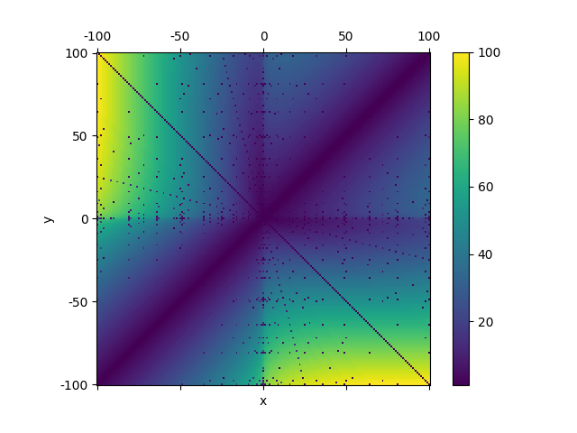

num2str is a tiny Python library to convert a floating number to mathematical expressions. The algorithm, which can be used in numerical calculation tools, is simple and efficient.
Source file can be downloaded here.
The following example shows how to use this lib:
>>> from math import * >>> from num2str import num2str >>> num2str(3 / 5) '3/5' >>> num2str(pi / 2) 'π/2' >>> num2str(cos(pi / 6)) 'sqrt(3)/2' >>> num2str(sin(pi / 12)) '(sqrt(6)-sqrt(2))/4'
It supports the following formats:
The $n$ in $n\pi$, $\arcsin n$, $\arccos n$ and $\arctan n$ only support fraction and root.
We use a new algorithm to calculate the (5) format, You can find more information in this article.
The above figure is about the algorithm's efficency. This indicates how many steps it takes for the algorithm to find the result to $\sqrt{x}+\sqrt{y}$.